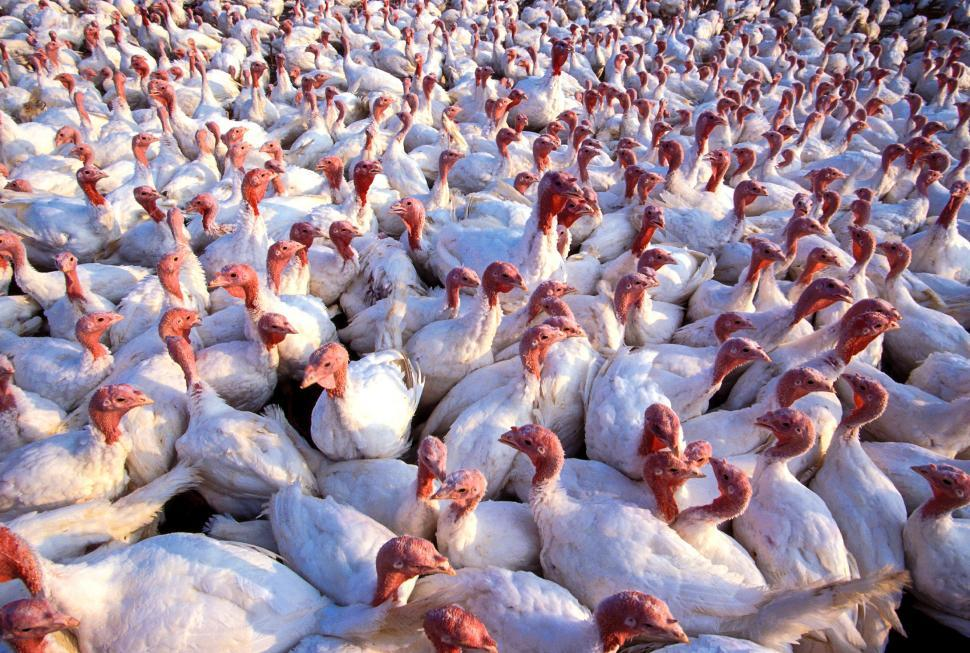
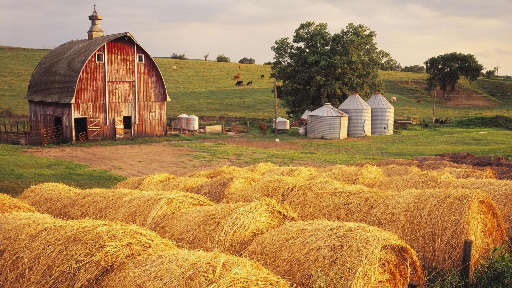

SOME PICTURES OF FARM:

What is Poultry-Farming?

In poultry farming, rearing, and management of fowls are done for two purposes-
- Production of the eggs.
- Production of meat or flesh.
In order to meet the quantity and quality requirements, a variety of strains (breeds) are raised. These improved strains include layers which produce eggs and broilers that provide meat.
Since poultry farming is a profit-making business, its primary focus is on maximum production in less expenditure. For this reason, cross-breeding of local and foreign breeds was started. Cross-breeding aims for raising breeds with desirable traits.